An important electrical quantity with no equivalent in DC circuits is frequency.
Frequency measurement is very important in many applications of alternating current, especially in AC power systems designed to run efficiently at one frequency and one frequency only.
If the AC is being generated by an electromechanical alternator, the frequency will be directly proportional to the shaft speed of the machine, and frequency could be measured simply by measuring the speed of the shaft.
If frequency needs to be measured at some distance from the alternator, though, other means of measurement will be necessary.
One simple but crude method of frequency measurement in power systems utilizes the principle of mechanical resonance. Every physical object possessing the property of elasticity (springiness) has an inherent frequency at which it will prefer to vibrate.
The tuning fork is a great example of this: strike it once and it will continue to vibrate at a tone specific to its length. Longer tuning forks have lower resonant frequencies: their tones will be lower on the musical scale than shorter forks.
Imagine a row of progressively-sized tuning forks arranged side-by-side. They are all mounted on a common base, and that base is vibrated at the frequency of the measured AC voltage (or current) by means of an electromagnet.
Whichever tuning fork is closest in resonant frequency to the frequency of that vibration will tend to shake the most (or the loudest). If the forks’ tines were flimsy enough, we could see the relative motion of each by the length of the blur we would see as we inspected each one from an end-view perspective.
Well, make a collection of “tuning forks” out of a strip of sheet metal cut in a pattern akin to a rake, and you have the vibrating reed frequency meter:
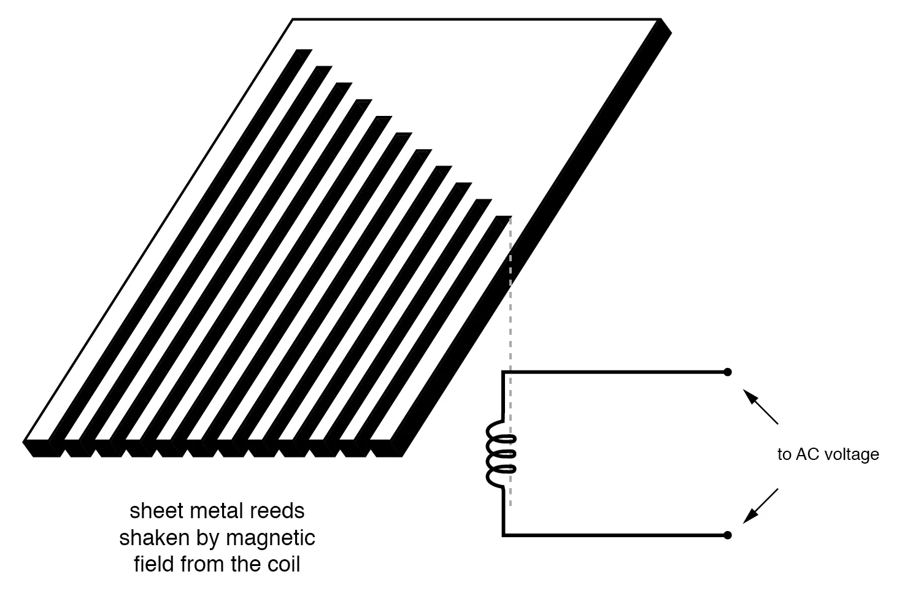
Vibrating reed frequency meter diagram.
The user of this meter views the ends of all those unequal length reeds as they are collectively shaken at the frequency of the applied AC voltage to the coil. The one closest in resonant frequency to the applied AC will vibrate the most, looking something like:
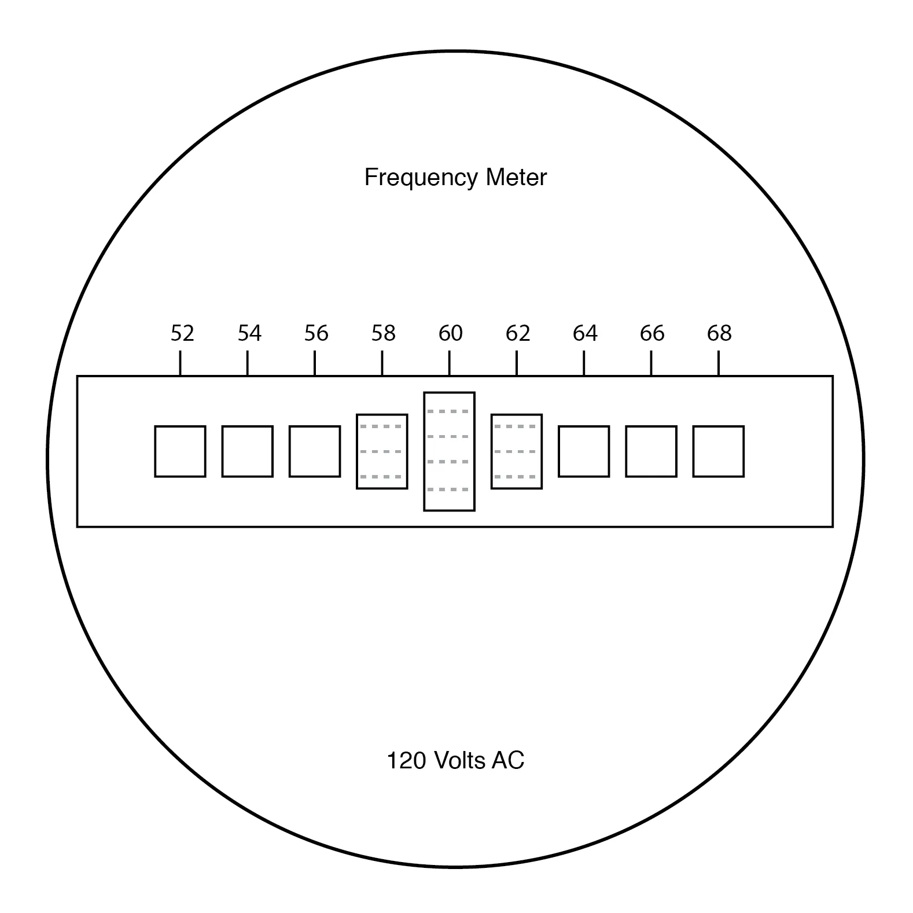
Vibrating reed frequency meter front panel.
Vibrating reed meters, obviously, are not precision instruments, but they are very simple and therefore easy to manufacture to be rugged. They are often found on small engine-driven generator sets for the purpose of setting engine speed so that the frequency is somewhat close to 60 (50 in Europe) Hertz.
While reed-type meters are imprecise, their operational principle is not. In lieu of mechanical resonance, we may substitute electrical resonance and design a frequency meter using an inductor and capacitor in the form of a tank circuit (parallel inductor and capacitor). See Figure below.
One or both components are made adjustable, and a meter is placed in the circuit to indicate the maximum amplitude of the voltage across the two components.
The adjustment knob(s) are calibrated to show resonant frequency for any given setting, and the frequency is read from them after the device has been adjusted for the maximum indication on the meter.
Essentially, this is a tunable filter circuit which is adjusted and then read in a manner similar to a bridge circuit (which must be balanced for a “null” condition and then read).
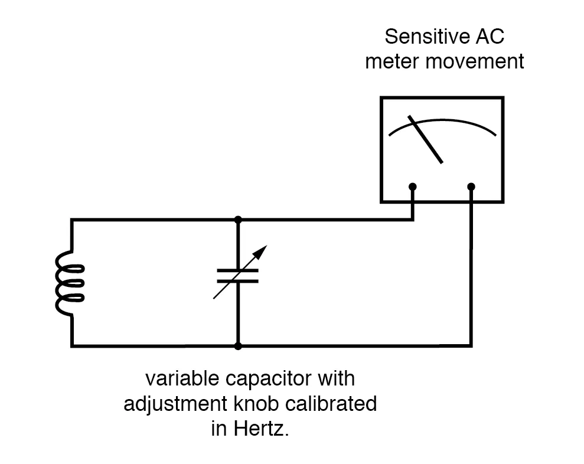
Resonant frequency meter “peaks” as L-C resonant frequency is tuned to test frequency.
This technique is a popular one for amateur radio operators (or at least it was before the advent of inexpensive digital frequency instruments called counters), especially because it doesn’t require direct connection to the circuit.
So long as the inductor and/or capacitor can intercept enough stray field (magnetic or electric, respectively) from the circuit under test to cause the meter to indicate, it will work.
In frequency as in other types of electrical measurement, the most accurate means of measurement are usually those where an unknown quantity is compared against a known standard, the basic instrument doing nothing more than indicating when the two quantities are equal to each other.
This is the basic principle behind the DC (Wheatstone) bridge circuit and it is a sound metrological principle applied throughout the sciences. If we have access to an accurate frequency standard (a source of AC voltage holding very precisely to a single frequency), the measurement of an unknown frequency, by comparison, should be relatively easy.
For that frequency standard, we turn our attention back to the tuning fork, or at least a more modern variation of it called the quartz crystal.
Quartz is a naturally occurring mineral possessing a very interesting property called piezoelectricity. Piezoelectric materials produce a voltage across their length when physically stressed, and will physically deform when an external voltage is applied across their lengths.
This deformation is very, very slight in most cases, but it does exist.
Quartz rock is elastic (springy) within that small range of bending which an external voltage would produce, which means that it will have a mechanical resonant frequency of its own capable of being manifested as an electrical voltage signal.
In other words, if a chip of quartz is struck, it will “ring” with its own unique frequency determined by the length of the chip, and that resonant oscillation will produce an equivalent voltage across multiple points of the quartz chip which can be tapped into by wires fixed to the surface of the chip.
In a reciprocal manner, the quartz chip will tend to vibrate most when it is “excited” by an applied AC voltage at precisely the right frequency, just like the reeds on a vibrating-reed frequency meter.
Chips of quartz rock can be precisely cut for desired resonant frequencies, and that chip mounted securely inside a protective shell with wires extending for connection to an external electric circuit.
When packaged as such, the resulting device is simply called a crystal (or sometimes “xtal”). The schematic symbol is shown in the figure below.
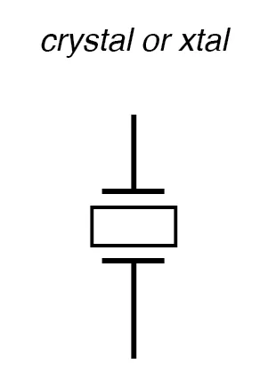
Crystal (frequency determining element) schematic symbol.
Electrically, that quartz chip is equivalent to a series LC resonant circuit. (Figure below) The dielectric properties of quartz contribute an additional capacitive element to the equivalent circuit.
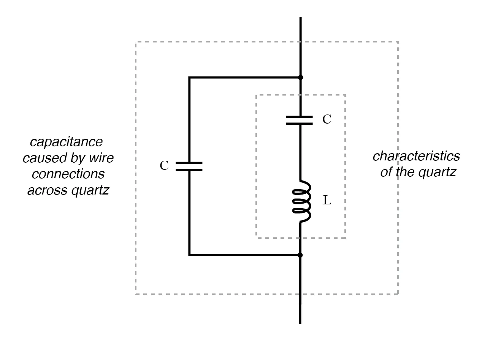
Quartz crystal equivalent circuit.
The “capacitance” and “inductance” shown in series are merely electrical equivalents of the quartz’s mechanical resonance properties: they do not exist as discrete components within the crystal. The capacitance shown in parallel due to the wire connections across the dielectric (insulating) quartz body is real, and it has an effect on the resonant response of the whole system.
A full discussion on crystal dynamics is not necessary here, but what needs to be understood about crystals is this resonant circuit equivalence and how it can be exploited within an oscillator circuit to achieve an output voltage with a stable, known frequency.
Crystals, as resonant elements, typically have much higher “Q” (quality) values than tank circuits built from inductors and capacitors, principally due to the relative absence of stray resistance, making their resonant frequencies very definite and precise.
Because the resonant frequency is solely dependent on the physical properties of quartz (a very stable substance, mechanically), the resonant frequency variation over time with a quartz crystal is very, very low. This is how quartz movement watches obtain their high accuracy: by means of an electronic oscillator stabilized by the resonant action of a quartz crystal.
For laboratory applications, though, even greater frequency stability may be desired. To achieve this, the crystal in question may be placed in a temperature stabilized environment (usually an oven), thus eliminating frequency errors due to thermal expansion and contraction of the quartz.
For the ultimate in a frequency standard though, nothing discovered thus far surpasses the accuracy of a single resonating atom. This is the principle of the so-called atomic clock, which uses an atom of mercury (or cesium) suspended in a vacuum, excited by outside energy to resonate at its own unique frequency.
The resulting frequency is detected as a radio-wave signal and that forms the basis for the most accurate clocks known to humanity. National standards laboratories around the world maintain a few of these hyper-accurate clocks, and broadcast frequency signals based on those atoms’ vibrations for scientists and technicians to tune in and use for frequency calibration purposes.
Now we get to the practical part: once we have a source of accurate frequency, how do we compare that against an unknown frequency to obtain a measurement?
One way is to use a CRT as a frequency-comparison device. Cathode Ray Tubes typically have means of deflecting the electron beam in the horizontal as well as the vertical axis.
If metal plates are used to electrostatically deflect the electrons, there will be a pair of plates to the left and right of the beam as well as a pair of plates above and below the beam as in the figure below.
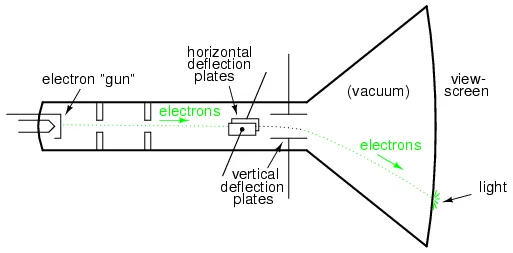
Cathode ray tube (CRT) with vertical and horizontal deflection plates.
If we allow one AC signal to deflect the beam up and down (connect that AC voltage source to the “vertical” deflection plates) and another AC signal to deflect the beam left and right (using the other pair of deflection plates), patterns will be produced on the screen of the CRT indicative of the ratio of these two AC frequencies.
These patterns are called Lissajous figures and are a common means of comparative frequency measurement in electronics.
If the two frequencies are the same, we will obtain a simple figure on the screen of the CRT, the shape of that figure being dependent upon the phase shift between the two AC signals. Here is a sampling of Lissajous figures for two sine-wave signals of equal frequency, shown as they would appear on the face of an oscilloscope (an AC voltage-measuring instrument using a CRT as its “movement”).
The first picture is of the Lissajous figure formed by two AC voltages perfectly in phase with each other:
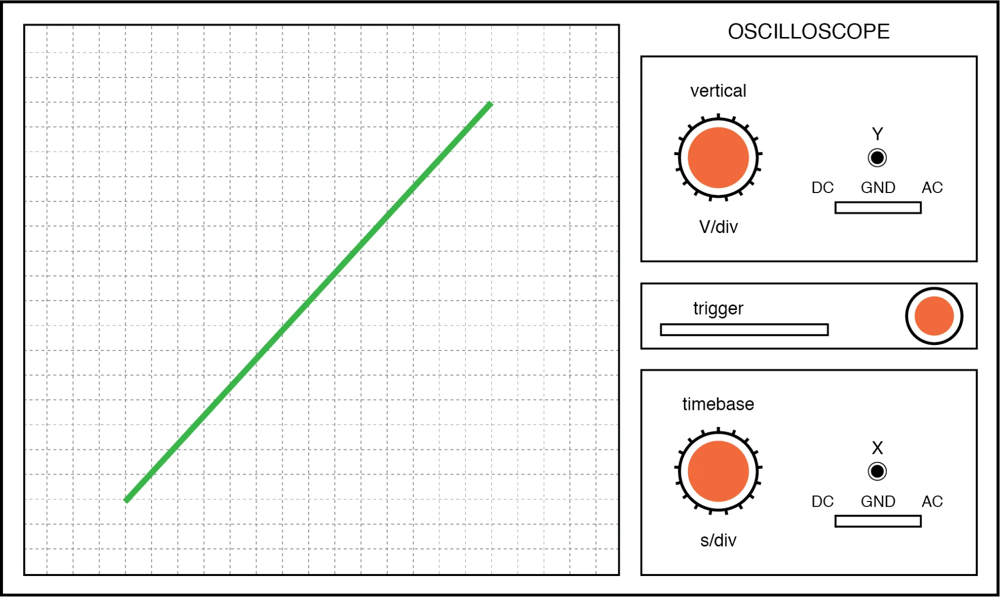
Lissajous figure: same frequency, zero degrees phase shift.
If the two AC voltages are not in phase with each other, a straight line will not be formed. Rather, the Lissajous figure will take on the appearance of an oval, becoming perfectly circular if the phase shift is exactly 90° between the two signals, and if their amplitudes are equal:
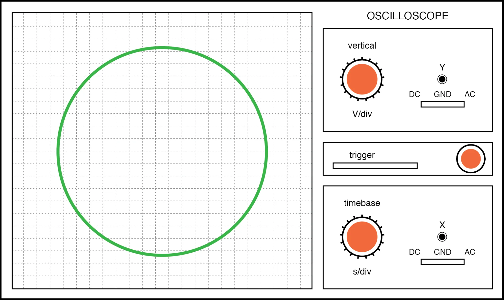
Lissajous figure: same frequency, 90 or 270 degrees phase shift.
Finally, if the two AC signals are directly opposing one another in phase (180° shift), we will end up with a line again, only this time it will be oriented in the opposite direction:
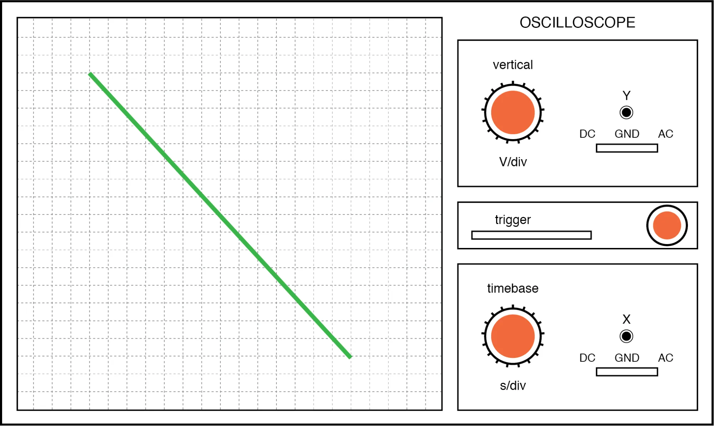
Lissajous figure: same frequency, 180 degrees phase shift.
When we are faced with signal frequencies that are not the same, Lissajous figures get quite a bit more complex. Consider the following examples and they’re given vertical/horizontal frequency ratios:
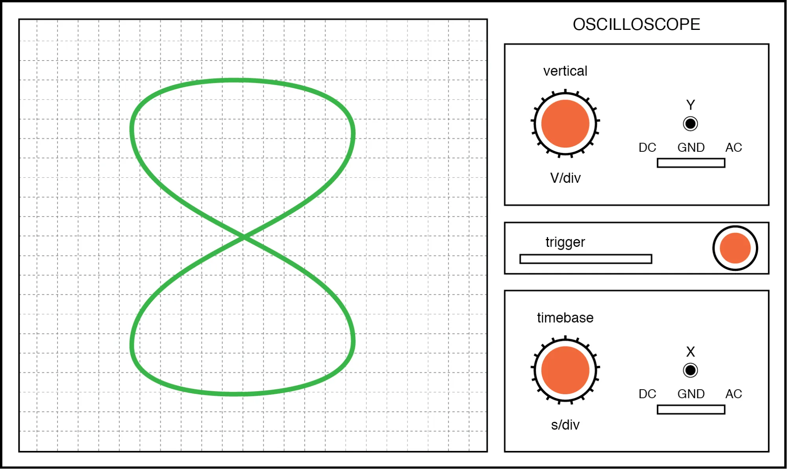
Lissajous figure: Horizontal frequency is twice that of vertical.
The more complex the ratio between horizontal and vertical frequencies, the more complex the Lissajous figure. Consider the following illustration of a 3:1 frequency ratio between horizontal and vertical:
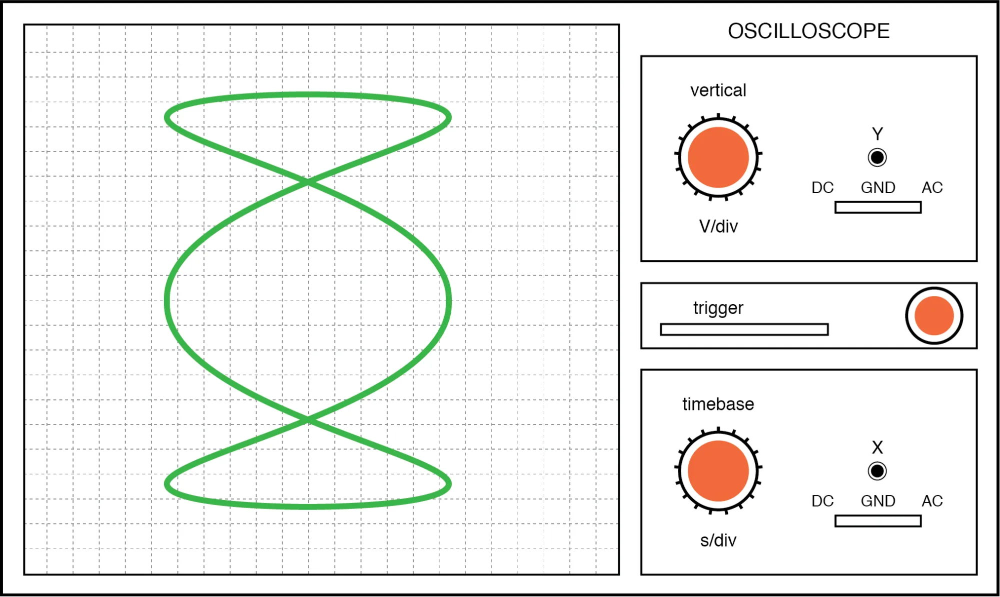
Lissajous figure: Horizontal frequency is three times that of vertical.
. . . and a 3:2 frequency ratio (horizontal = 3, vertical = 2) in the figure below.
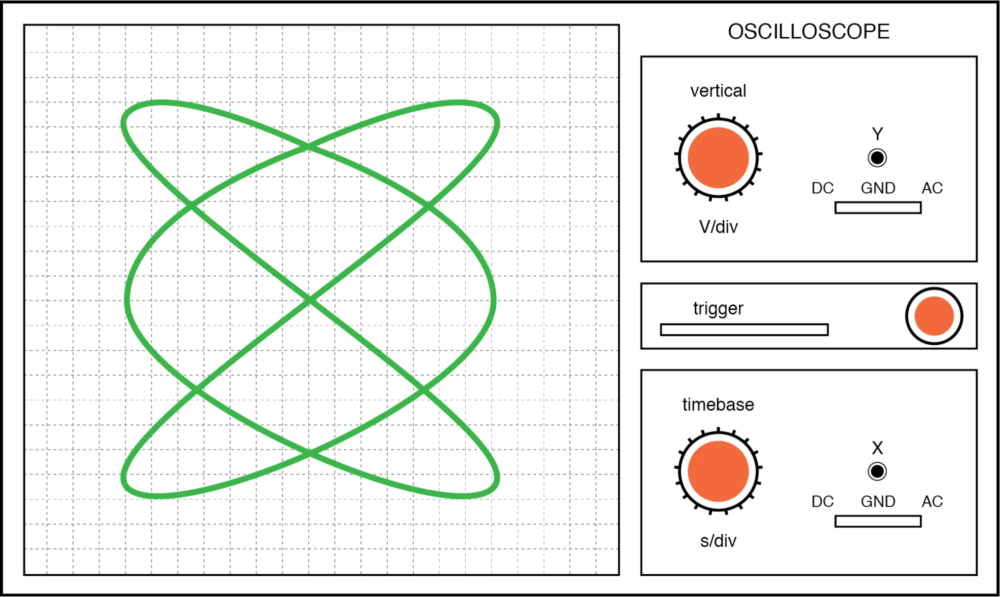
Lissajous figure: Horizontal/vertical frequency ratio is 3:2.
In cases where the frequencies of the two AC signals are not exactly a simple ratio of each other (but close), the Lissajous figure will appear to “move,” slowly changing orientation as the phase angle between the two waveforms rolls between 0° and 180°.
If the two frequencies are locked in an exact integer ratio between each other, the Lissajous figure will be stable on the viewscreen of the CRT.
The physics of Lissajous figures limits their usefulness as a frequency-comparison technique to cases where the frequency ratios are simple integer values (1:1, 1:2, 1:3, 2:3, 3:4, etc.).
Despite this limitation, Lissajous figures are a popular means of frequency comparison wherever an accessible frequency standard (signal generator) exists.
REVIEW: